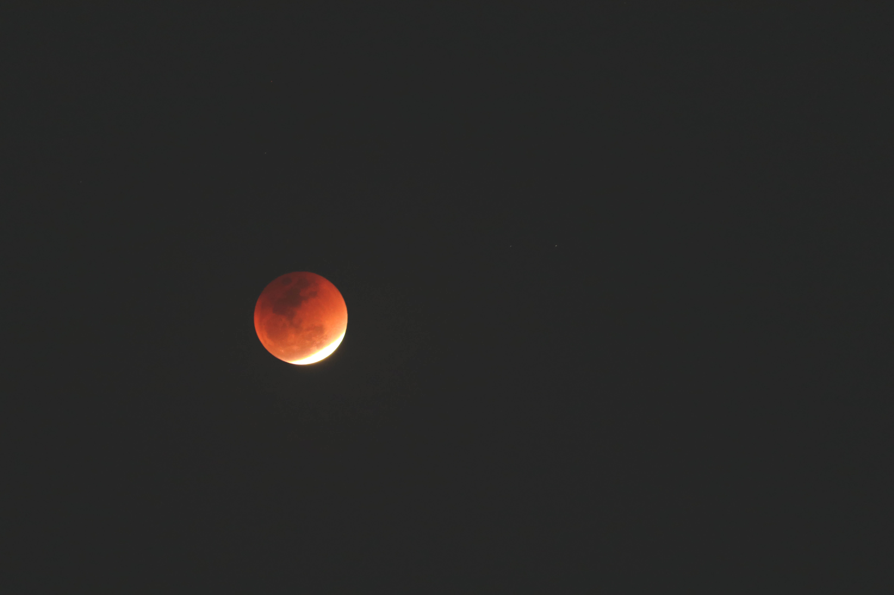

- 대체복무 에세이
- 시
- 여호와께서 먹여주실 것을 확신하자
Poem
사랑
먼 훗날
내 곁에 남은 게 너이기를
후회가 아니라

물감
하늘에 물감을 풀어놓은 것 같던 날이 어제인데,
하루 아침에 그 모든 물감이 뭍은 나뭇잎들이 바닥을 물들인다.
비 때문이다.
바닥에 떨어진 물감은 사람들의 발자국으로 곧 그 색을 잃게된다.
나도 모르는 사이, 나의 발자국이 누군가의 물감을 지우지는 않았을까..
나의 물감은 나도 모르는 사이, 누군가의 발자국으로 지워지지는 않았을까..
물감이 바뀌는 이유는 비 때문이지, 발자국 때문이 아닌데...